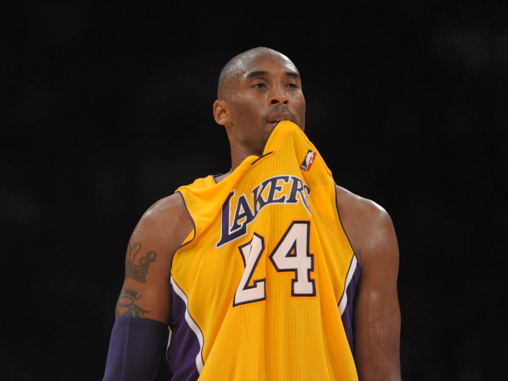
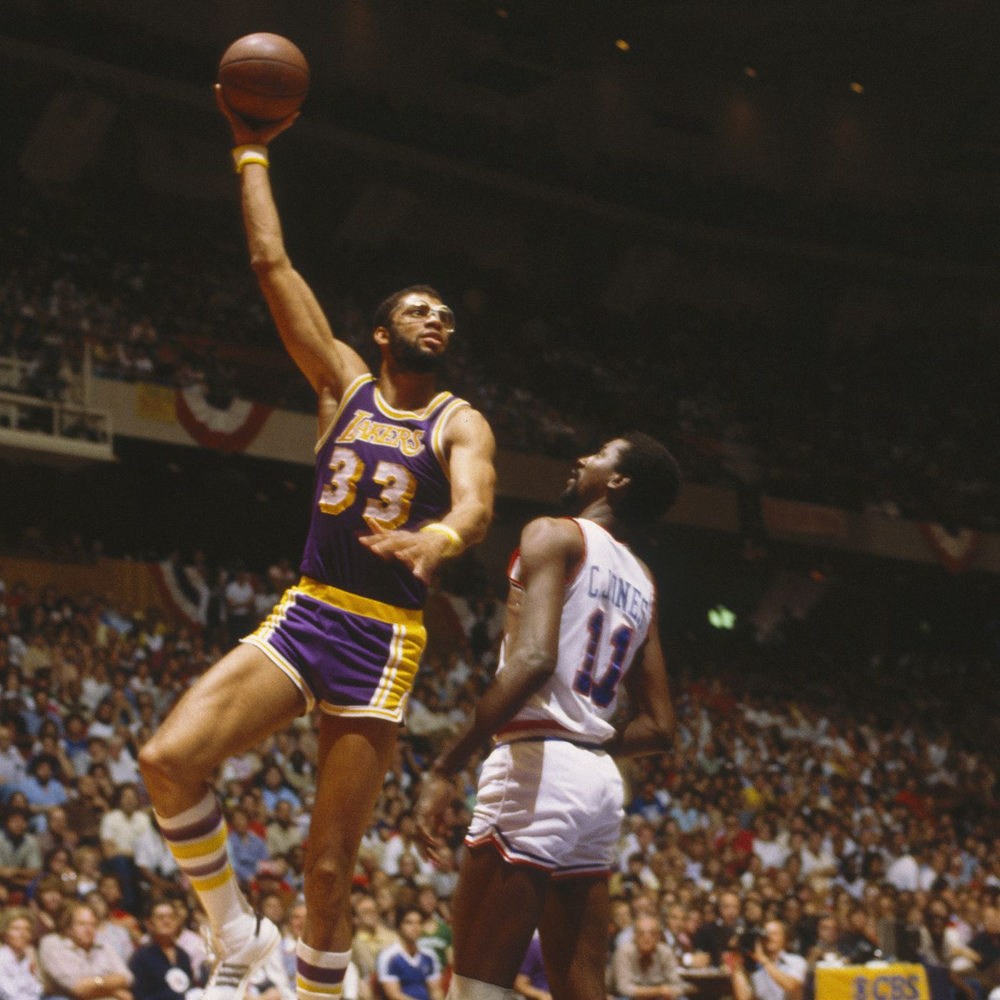
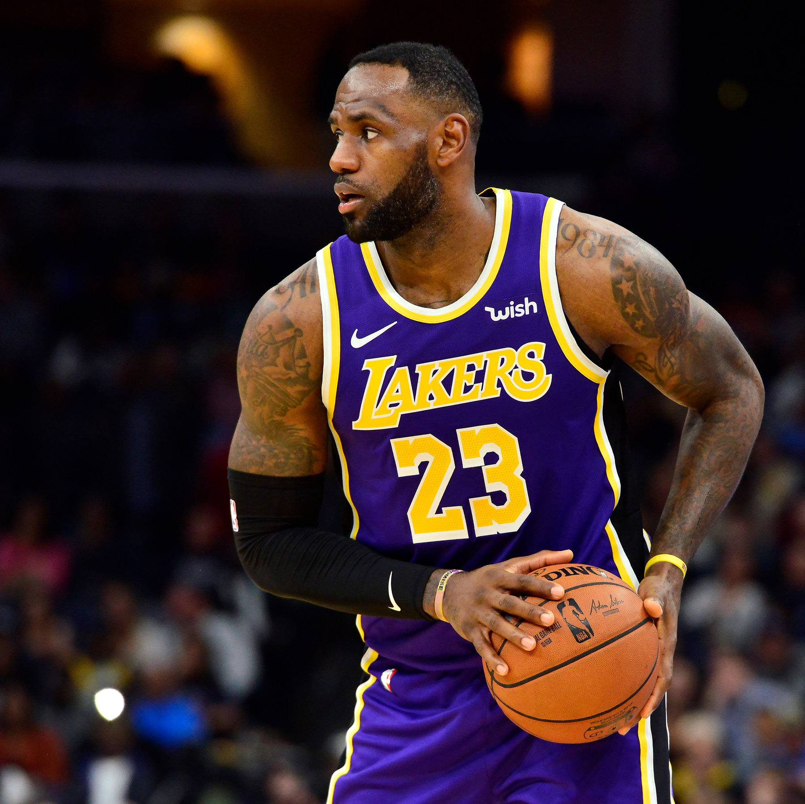
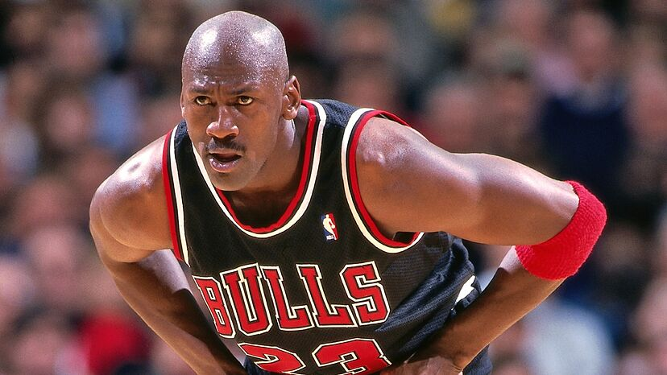

My Top 5 Basketball Players
#5 Kobe Bryant
- 1996-2016 Los Angeles Lakers
- 25.0 PPG, 5.2 RPG, 4.7 APG, 1.4 SPG
- 5x NBA Champion, 2x NBA Finals MVP, 1x NBA MVP, 18x NBA All-Star, 11x All-NBA First Team, 2x All-NBA Second Team, 2x All-NBA Third Team, 9x NBA All-Defensive First Team, 3x NBA All-Defensive Second Team
Byrant's lasting impact to the game was his cerebral edge and unquenchable desire to master it, despite all of his statistacal accomplishments, including the five championships, the 81-point game, and the 60 point performance in his final game, and the 20 seasons spent with the game team. After Bryant passed away, "Mamba Mentality" evolved from a corny catchphrase to a guide for achieving your goals.
#4 Bill Russell

- 1956-69 Boston Celtics
- 15.1 PPG, 22.5 RPG, 4.3 APG
- 11x NBA Champion, 5x NBA MVP, 12x NBA All-Star, 3x All-NBA First Team, 8x All-NBA Second Team, 1x NBA All-Defensive First Team
The most winningness player in basketball history, Russell built the Celtics into a defensive powerhouse while winning 11 titles in 13 years. Russell was one of the players from his period who wouldn't have looked out of place in succeeding generations, and his defensive prowess and tenacity made him the ideal counterpoint to Wilt Chamberlain.
#3 Kareem Abdul-Jabbar
- 1969-75 Milwaukee Bucks; 1975-89 Los Angeles Lakers
- 24.6 PPG, 11.2 RPG, 3.6 APG, 2.6 BPG
- 6x NBA Champion, 2x NBA Finals MVP, 6x NBA MVP, 19x NBA All-Star, 10x All-NBA First Team, 5x All-NBA Second Team, 5x NBA All-Defensive First Team, 6x NBA All-Defensive Second Team, Previous NBA Scoring Leader
The extensive resume of accomplishment Abdul-Jabbar has is unmatched in NBA history. He score more points that any other player in league history thanks to his devastating skyhook, and although he wasn't very showy, there may have never been a greater player.
#2 Lebron James
- 2003-10,2014-18 Clevland Cavaliers; 2010-14 Miami Heat; 2018-Present Los Angeles Lakers
- 27.2 PPG, 7.5 RPG, 7.3 APG, 1.5 SPG
- 4x NBA Champion, 4x NBA Finals MVP, 4x NBA MVP, 19x NBA All-Star, 13x All-NBA First Team, 3x All-NBA Second Team, 3x All-NBA Third Team, 5x NBA All-Defensive First Team, 1x NBA All-Defensive Second Team, NBA Rookie of the Year, Current NBA Scoring Leader
Although James' game is based on strength, his passing prowess may be his strongest trait. He had the lakers in the heart of the title race when he was 35 years old and in his 17th season, redefining what it means to be in an athlete's peak. Earlier this year he surpassed Kareem Abdul-Jabbar as the new NBA all-time leading scorer.
#1 Michael Jordan
- 1984-93, 1995-98 Chicago Bulls; 2001-03 Washignton Wizards
- 30.1 PPG, 6.2 RPG, 5.3 APG, 2.3 SPG
- 6x NBA Champion, 6x NBA Finals MVP, 5x NBA MVP, 14x NBA All-Star, 10x All-NBA First Team, 1x All-NBA Second Team, 1x NBA Defensive Player of the Year, 9x NBA All-Defensive First Team, NBA Rookie of the Year
The best athlete to ever play the game. Jordan became a global celebrity on and off the court while leading the Bulls to six NBA titles. Jordan defined a generation of basketball and set a new bar for those who followed in his shoes with his skill on both ends of the floor. His talent went beyond just playing the game.